Chapter 6 Checking posteriors by simulation
On this section, we have the results for the posterior calculations using the expressions found previously in this document. The posterior density values are calculated using simulated values, in the same maths structure described in the “Maths” section.
In all plots, the dashed red lines represent the ‘true’ values for each parameter. Ideally, these values should maximize the posteriors. If that happens we can be more sure that our calculations are correct.
The fixed parameters are \(\alpha = 0.5\), \(\beta = 1\), \(\mu_{\mu} = 0.5\) and \(\tau_{\mu} = 0.5\)
6.1 ‘High’ k: 2.5
This first plot is just a summary of the distribution of the simulated data, using 9 groups 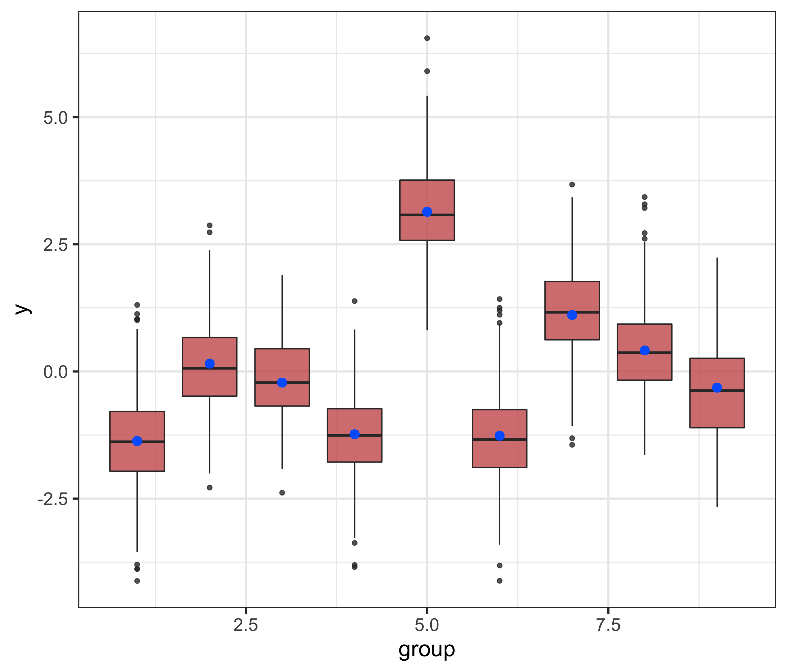
The posterior for \(\tau\) seem to have maximum at a value very close to the ‘true’ \(\tau\) (used to simulated the data)
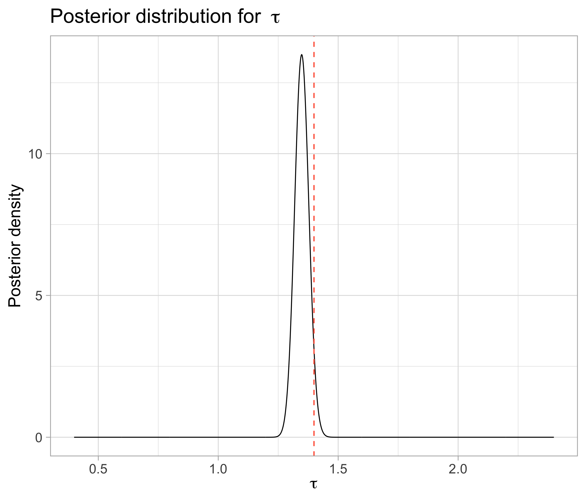
- For both \(\mu\) and \(\mu_j\), that doesn’t happen as we wanted, and the maxima are not so close to the original values
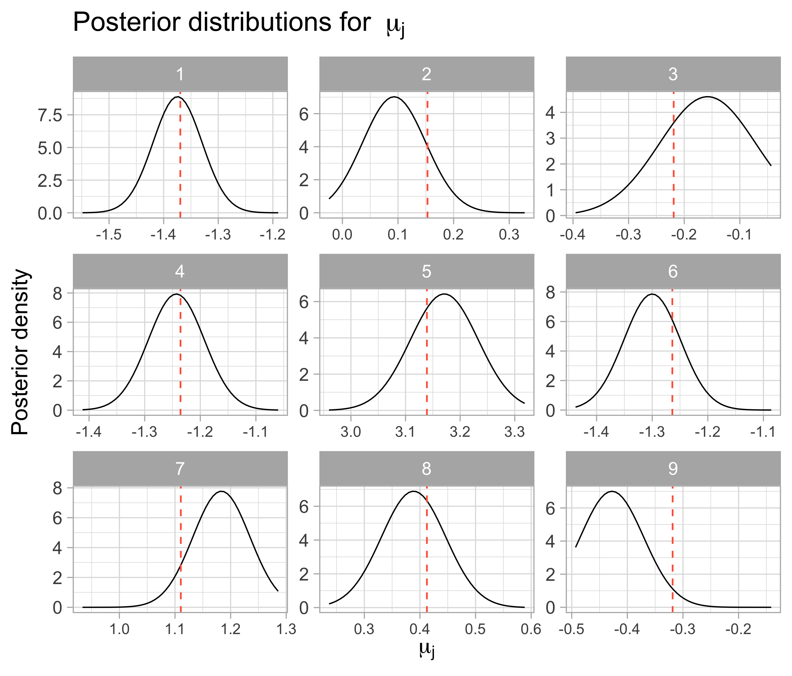
| Index | Posterior average | True mu |
|---|---|---|
| 1 | -1.373 | -1.369 |
| 2 | 0.093 | 0.153 |
| 3 | -0.161 | -0.219 |
| 4 | -1.242 | -1.236 |
| 5 | 3.168 | 3.139 |
| 6 | -1.301 | -1.264 |
| 7 | 1.181 | 1.110 |
| 8 | 0.386 | 0.413 |
| 9 | -0.428 | -0.319 |
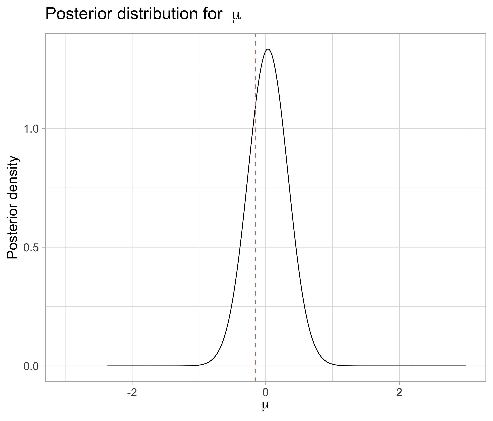
6.2 ‘Small’ k: 0.5
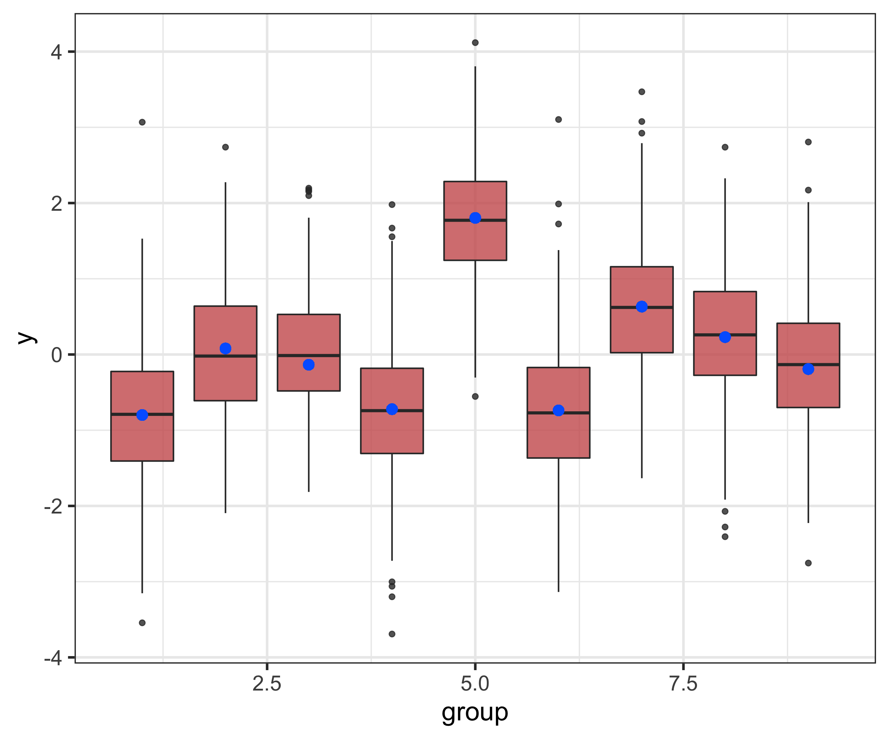
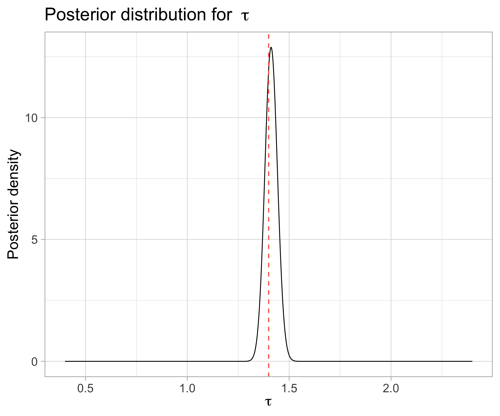
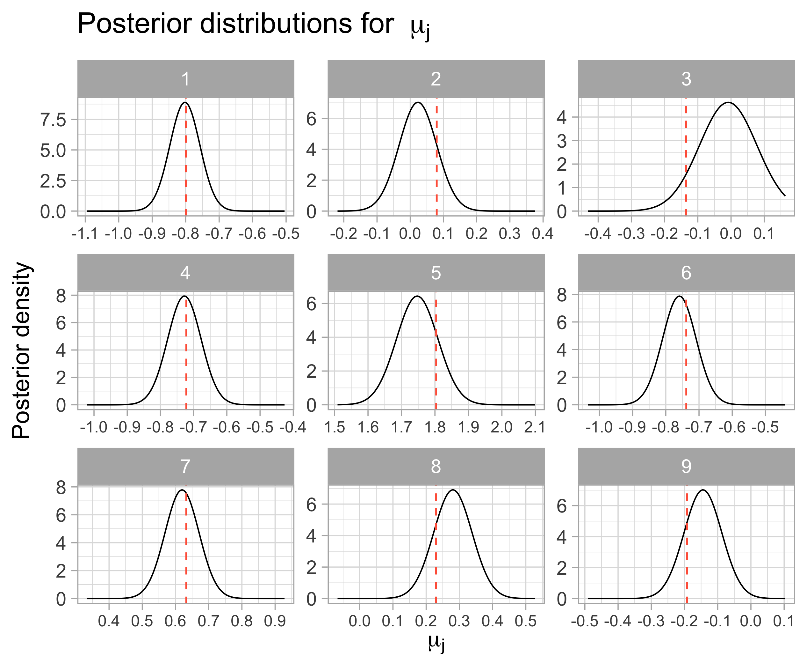
| Index | Posterior average | True mu |
|---|---|---|
| 1 | -0.804 | -0.799 |
| 2 | 0.025 | 0.080 |
| 3 | -0.007 | -0.135 |
| 4 | -0.726 | -0.722 |
| 5 | 1.749 | 1.804 |
| 6 | -0.758 | -0.738 |
| 7 | 0.620 | 0.632 |
| 8 | 0.279 | 0.230 |
| 9 | -0.145 | -0.193 |
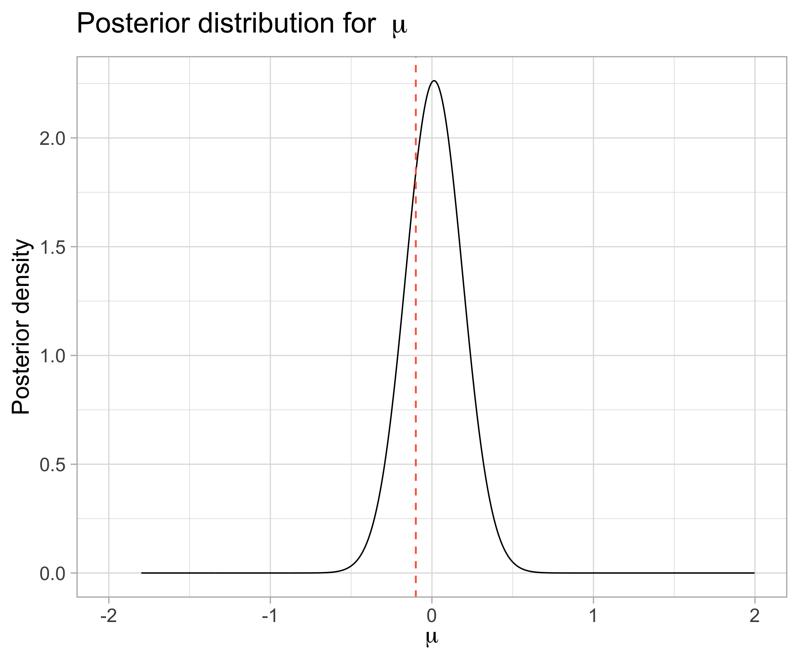
6.3 \(y | k_1, \tau_{\mu}, \mu_{\mu}, \alpha, \beta\): Evaluating parameter grids for \(k_1\), \(\mu_{\mu}\), \(\beta\) and \(\alpha\)
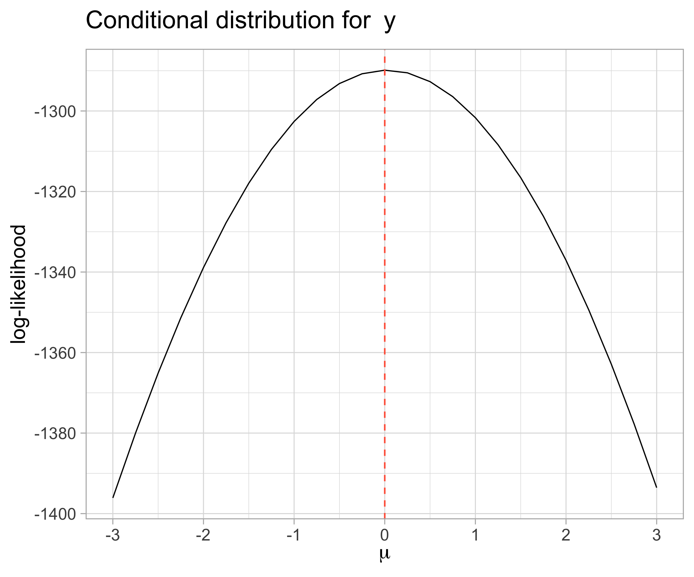
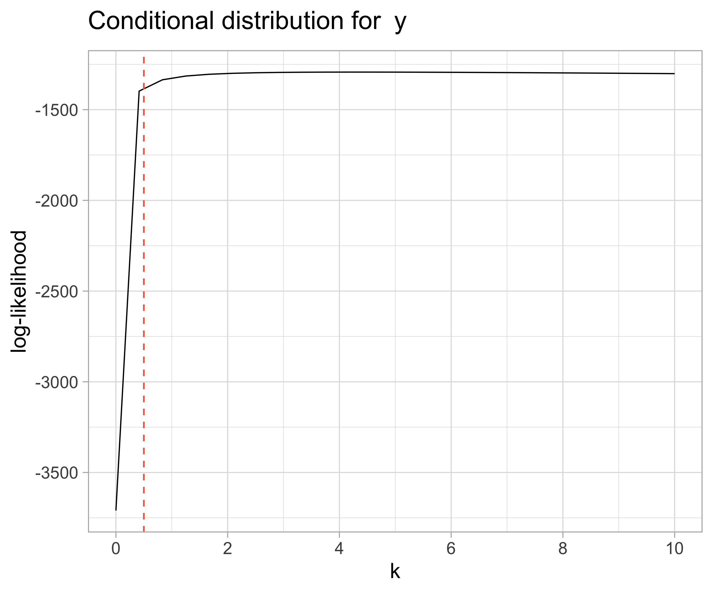

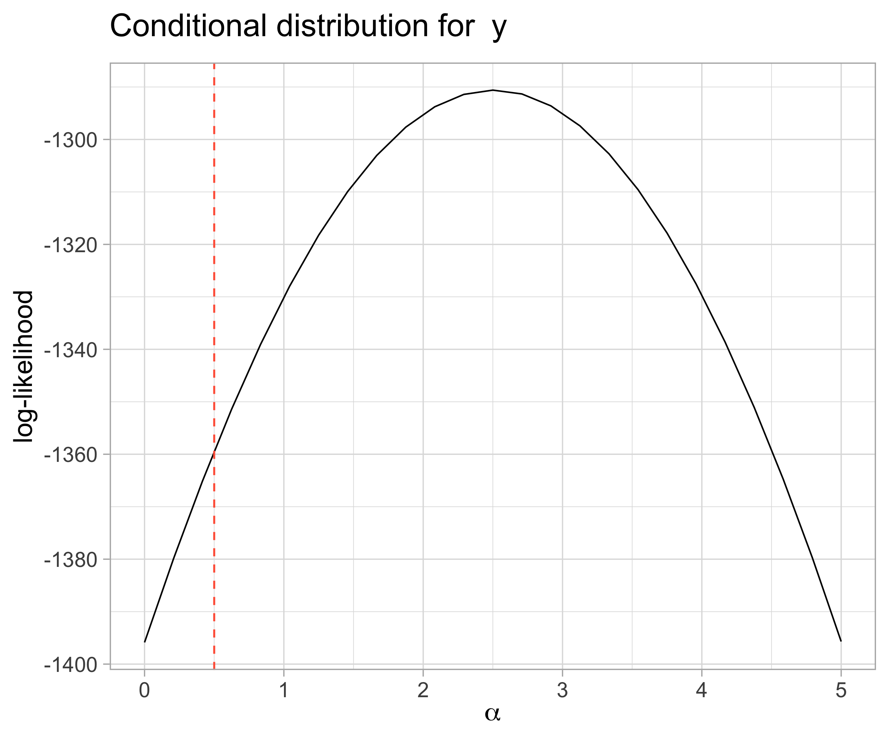
6.4 Code
Find the latest version at https://github.com/brunaw/mixed_bart/blob/master/code/simulation_MB/MB_math_check.R